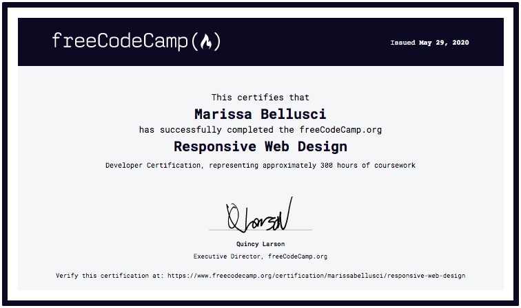
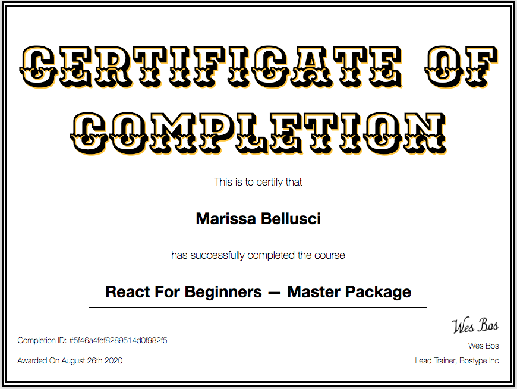

Welcome to my portfolio site!
I'm a marketing specialist and professional graphic, web, and packaging designer with 7 years of experience creating content and strategizing marketing campaigns. I'm passionate about keeping my thumb on the pulse of the latest design trends and creating compelling content that not just sells, but also entertains and informs. I believe that marketing content is so much more than just driving sales -- it's building lifelong relationships with your customer base. It's because of this that I so deeply value creating content that reaches and speaks to various groups of people.
In addition to marketing and design, I also enjoy writing code and building websites. I've hand-coded this very portfolio site in HTML/CSS/Javascript in VS Code, using Git from the command line and hosting via GitHub. While this certainly isn't the easiest or simplest way to create a portfolio site, it's been an excellent way to learn and practice skills that excite me and make me more valuable as a marketing and design professional.
As I continue my rapid growth, I remain open to opportunities to continue learning alongside other like-minded individuals. If interested in working together, please feel free to visit my Connect page or send me a quick email at marissabellusci@gmail.com.
Thanks for stopping by!
Resume
Softwares, Skills & Coding Languages
Adobe Illustrator
Adobe Photoshop
Adobe Premiere Pro
Google Ads
Meta Ads
Shopify
HTML5
CSS3
JavaScript
React
Git
GitHub
Command Line
VS Code
Responsive Websites
 Web Accessibility
Web Accessibility
WordPress
Certifications
Responsive Web Design Certification from FreeCodeCamp.org
React for Beginners - Master Package from Wes Bos
More About Me...
In May of 2017, I earned my bachelor's degree in English from SUNY Geneseo, a small, state liberal arts college in Upstate New York. During my time there, I explored a broad spectrum of passions from sports, to cultural studies, to writing and academics.
While in undergrad, I joined The Canonicity Project, a student-led research group started one year prior by some of my close friends and mentors. I contributed as a research assistant, helping to organize, format, and enter data for analysis. This was my earliest exposure to data analysis programs (R, specifically) and app creation--while I have since branched out to focus more on front-end coding, this experience served as the kernal around which I would eventually build my love of coding and web app development.
I also spent a lot of my time writing: in 2017 I received a travel grant to present at the Sigma Tau Delta English Honor Society Internation Convention, and that same year won 2nd place in SUNY Geneseo’s college-wide diversity studies writing contest.
My biggest non-academic passion while in college was competing for Geneseo's cross country and track teams. In 2014, I ran at my first NCAA national championship meet, contributing to a 5th place team finish and placing in the top 50 individually. Later, in 2016 and 2017, I had the chance to serve as a team captain, contributing to a 3rd place team finish and placing in the top 100 individually. During my time as a Geneseo athlete, I earned USTFCCCA All-Academic honors, was named a two-time All-Region athlete and All-Conference Hall of Fame Inductee, and also served on Geneseo's Student-Athlete Advisory Committee.
Post-grad, my love of being on a competitive athletic team has endured, leading me to discover a love of cycling, particularly gravel racing. In my spare time, I enjoy competing in 100 mile gravel races with my team, Ride or Die Collective.
Since graduating, I've worked in marketing and creative design at various companies in the fashion and consumer packaged goods industries, two of which underwent significant rebranding campaigns and new product launches that I helped facilitate. Most of my roles have been on small teams or at startups, allowing me to gain a broad base of knowledge and a versatile skillset. This type of background allows me to bring a holistic mindset to every project I take on and adapt quickly in a fast-paced work environment.
For more details, check out my resume. Thanks for stopping by!